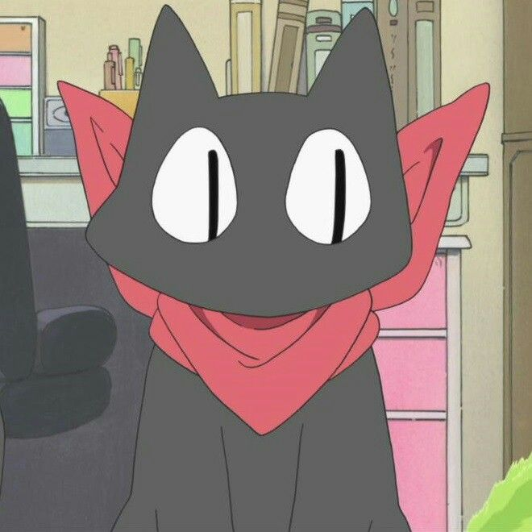

Ellen
Jovem Aprendiz e Estudante
Skills
Marketing, Design, Excel
HTML e CSS básico
Ellen
Jovem Aprendiz e Estudante
Skills
Marketing, Design, Excel
HTML e CSS básico
Olá! Esta página ainda é um trabalho em andamento, então não está 100% completa. Pretendo terminá-la até o fim deste mini-curso/webinar. Porém, gostaria de dizer que estou aprendendo bastante.
Não tenho muitas experiências no mundo do trabalho, então agora estou estudando no meu tempo livre, e pretendo fazer alguns projetos no futuro.
Competências
Vendas Online
2018-Atualmente
Marketing, Designer, Freelancer
Gerenciamento de mídias sociais (Instagram e Pinterest) e na criação de publicidade para impulsionar as vendas.
Análise do comportamento dos consumidores a fim de identificar quais os produtos e serviços mais vendidos e o nível de satisfação.
Criação de designs para diferentes nichos, que foram vendidos online em forma de estampas dos mais diversos produtos.
Escola Pública de SP
2010-2021
Ensino Médio
Estudei nesta escola desde primário até o fim do ensino médio : )
SENAI EAD
Abril de 2022
Excel
Um curso a distância sobre os básicos do Excel.